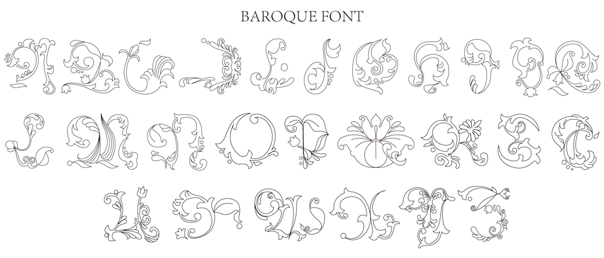
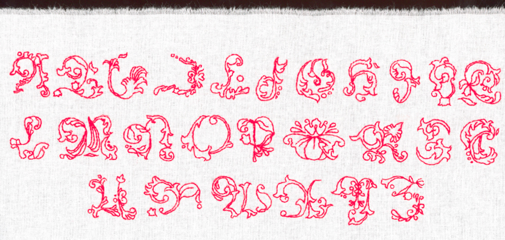

The artistic style of the Baroque and Rococo periods is characterized by "extreme decoration", and I think this has produced a game of decoration and practicality with words. In addition, modern font design tends to focus on simplicity. So I think about it: if the readability of the text is abandoned and the complicated pattern decoration is given to it, is this kind of text still valid?
The extreme pursuit of ornamental and aesthetic significance in various art fields during the Baroque and Rococo periods inevitably made the artistic content of these two periods show the characteristics of form over content, including architectural decoration, women's Exaggerated skirt support, girdle and headgear. It can also be understood as the way the nobility of the time experienced the surrounding environment, which I transplanted into the type design and developed the experiment as shown at the end.
The extreme pursuit of decorative aesthetics in the Baroque and Rococo periods reveals to a certain extent that people tend to use external things to construct and maintain internal balance, and even blindly rationalize anything that is defined as "beauty" by the times. The form of embroidery combines material structure with the spiritual enjoyment of decorative text, exploring the contradictory juxtaposition of practical and aesthetic meanings caused by the friction between ornamentality and practicality. Using coarse cloth and cotton thread to build a dialogue between different eras, different perspectives (aesthetics first or practical first), and even different classes (aristocrats and commoners), it explores from "inner practical consciousness" to "excessive outer consciousness". Different perceptions of aesthetic needs”.
